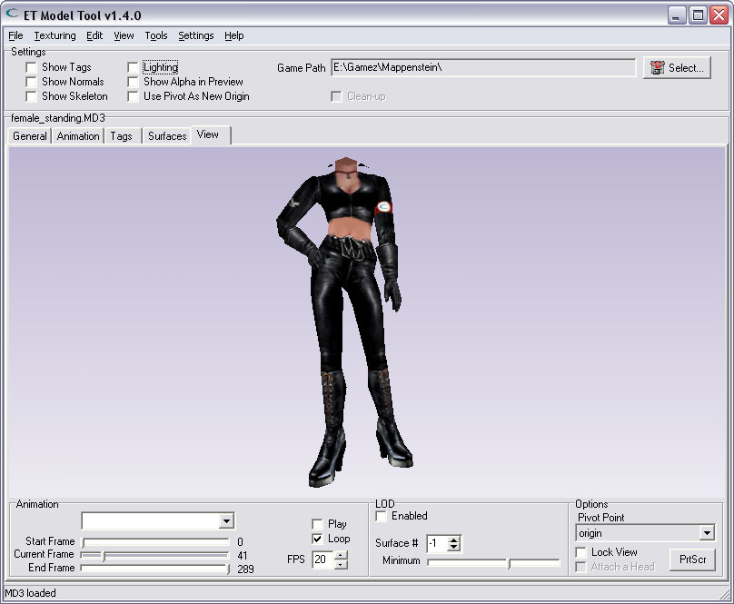
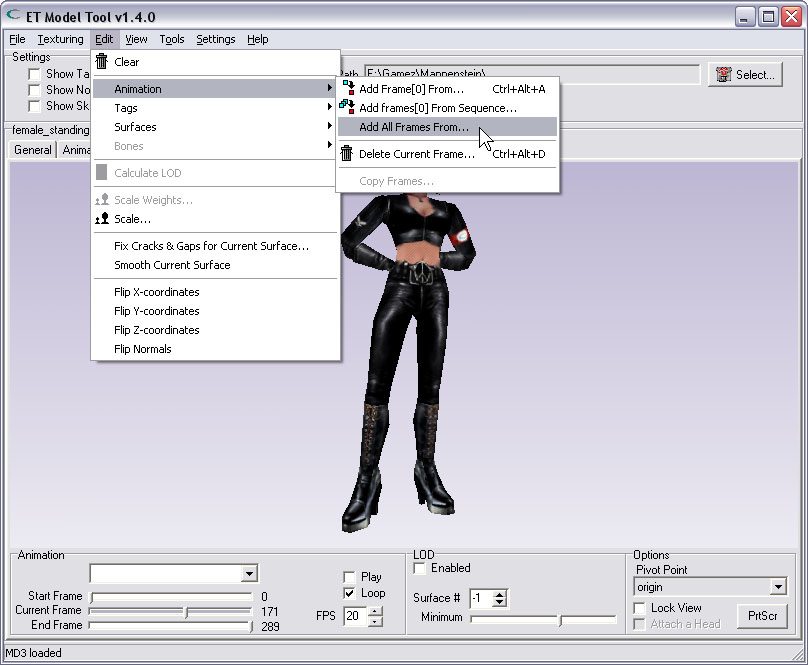
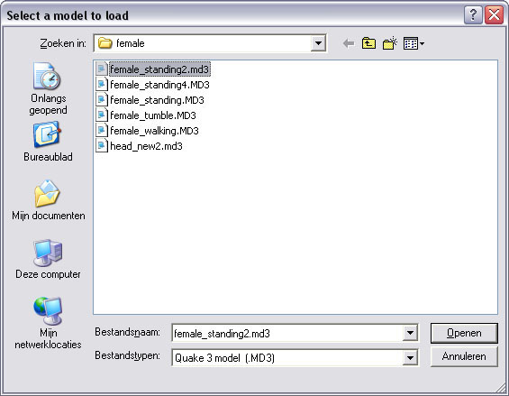
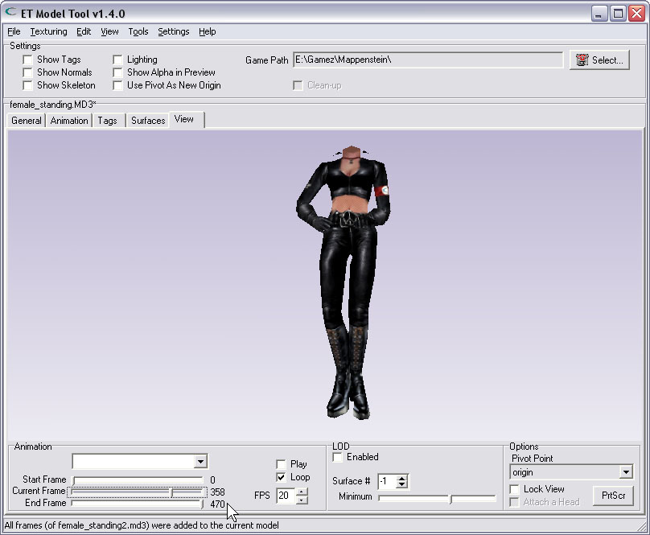

| Adding all frames from another MD3 | |
| You can combine 2 seperate animated MD3-files into 1 animated MD3. This way You can pack more than 1 animation in a single file. First You have to load the initial MD3. Here i have loaded a model of a female. The animation holds 290 frames. As You can see, the file i have loaded is called: female_standing.md3 | |
|  | |
| Select the option from the menu | |
| After loading the initial file, select the choice from the menu: "Add all frames from..." | |
|  | |
| Then select the file with the animation You want to add to the loaded model. This second MD3-file must contain the same model, otherwise the toll cannot add its animation. | |
|  | |
| 2 become 1 | |
| When all went well, the final MD3 contains both animations, as shown by the 'End Frame' value. The message in the statudbar also indicates the frames were added successfully.. | |
|  | |
| Restrictions | |
| Any file that is used to combine the final MD3 must contain the same model. That is, the file must have: You will get an error-message if one of those criteria is not met, and no frame will be added. | |